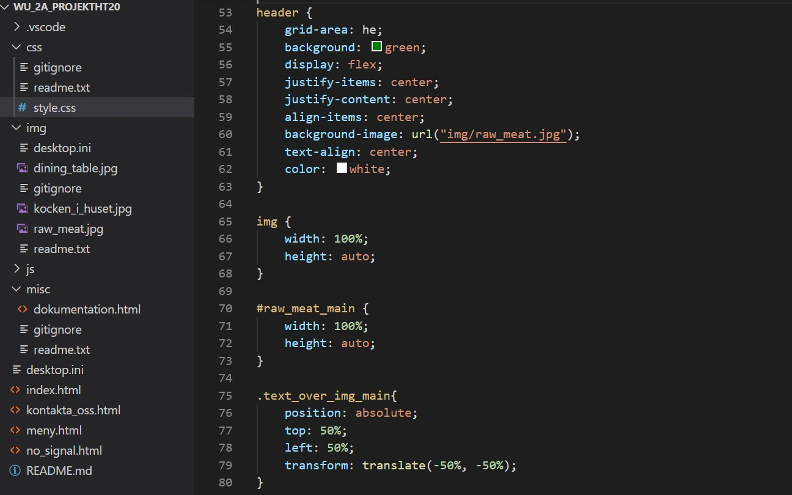
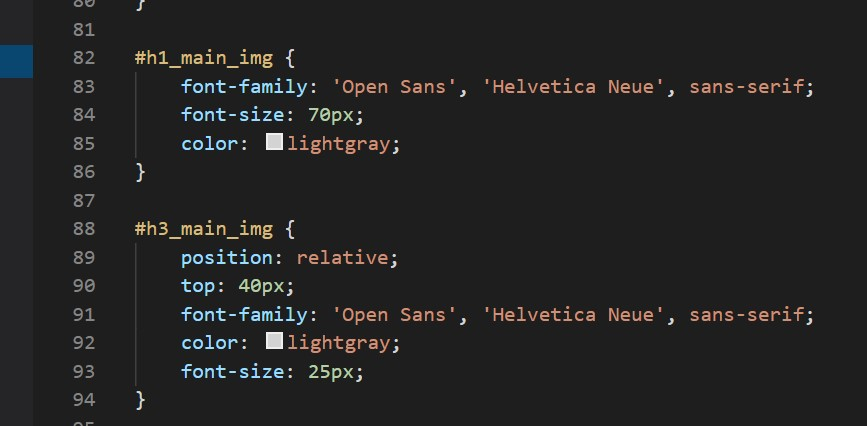
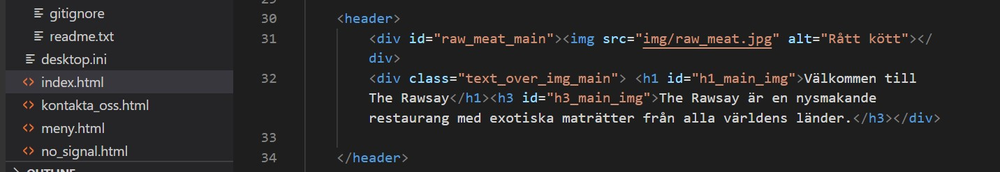

Dokumentation projekt HT
1. Idébeskrivning
2. Planering
2.1 Handskiss
2.2 Schema
| Vecka | På lektionerna | Utanför lektionerna |
| 47 |
|
|
| 48 |
|
|
| 49 |
|
|
| 50 |
|
|
3. Dokumentation
Lektioner vecka 47
På fredagen har jag skissat och gjort en layout för mina tre olika sidor för restaurangen. Jag har också kommit på lite olika höjder samt länger och vad som ska vara med på varje sida. Nästa vecka ska jag börja sätta upp skelettet för de olika sidorna och börja jobba med css.
Lektioner vecka 48
Under torsdagen och fredagen har jag börjat jobba med html och css, jag har försökt att göra så att naven följer med när jag scrollar på samma ställe, fungerat tills den går förbi headern och sedan försvinner, får försöka fixa sedan. Annars har jag satt upp en layout som jag tror borde fungera och börjat jobba med css och höjder, längder, antalet länkar och annat.
Lektioner vecka 49
Fram tills tisdagen vecka 50 har jag haft problem med att få text över min bild på min startsida. Detta har jag äntligen lyckats lösa genom att göra denna lösning som bilderna visar, jag gjorde alltså om img till en background image och satte texten på en position: absolute. Jag har annars blivit klar med min startsida och är nöjd med resultatet som blivit. Jag har lyckats länka alla nav-delar och ska nästa vecka bli klar med de 2 andra sidorna samt göra en logga.



Lektioner vecka 50
4. Testning
5. Utvärdering (skrivs i slutet av arbetet, innan inlämning)